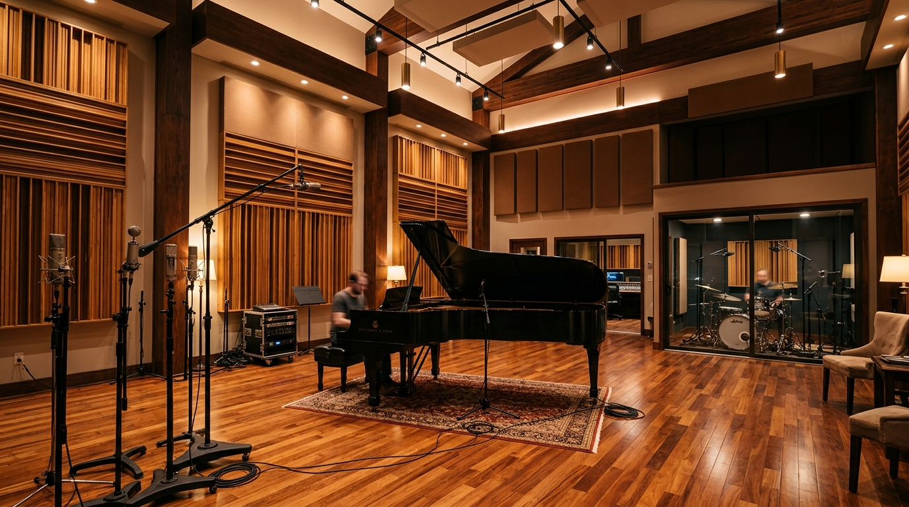

Where Pure Acoustic Physics Meets Unbridled Creative Soul
Founded in Hollywood in 2010, SoundForge Studios is a 12,000-square-foot sanctuary engineered for multi-platinum icons, visionary producers, and independent artists demanding immaculate sonic resonance.
From an Analog Underground to Hollywood’s Sonic Authority
"We built SoundForge because modern digital music was losing its room — its depth, its breath, and the raw harmonic electricity of analog iron."
In 2010, multi-platinum mixing engineer Marcus Vance acquired an abandoned 1940s masonry warehouse on Harmony Lane. While the music industry was rapidly retreating into laptop bedrooms and sterile in-the-box processing, Marcus teamed with world-renowned acoustician Vincent Bauer to construct a sanctuary celebrating physical space.
Today, SoundForge stands as one of the few independently owned world-class recording facilities on the West Coast that combines a fully restored 80-channel Solid State Logic 9080 J console, pristine vintage tube microphones, and cutting-edge 9.1.6 Dolby Atmos spatial mixing.
Preserving the Human Nuance
Our mission is to give artists an uncompromised acoustic haven where performance takes precedence over pitch correction. We believe the imperfections, breath, and harmonic excitement of real air moving in a tuned room create records that stand the test of decades.
100% Discrete Analog Path
No Latency Cue Mixes
Zero-Distraction Environment
24/7 Chief Engineer Support
NC-15 Acoustic Isolation
Every live room and control suite sits on independent concrete slabs floating on heavy-duty elastomeric spring mounts. With an exceptional NC-15 noise criterion rating, background noise from the Hollywood bustle is completely inaudible down to the micro-detail.
Custom RPG Diffusers
Calibrated 0.35s RT60
Quadruple-Glazed Sightlines
Decoupled HVAC Baffles
Audiophile-Grade Isolated Clean Power
SoundForge is powered by a dedicated 400A balanced isolation transformer system coupled with rooftop solar backup. This eliminates all electrical hum, ground loops, and radio-frequency interference, yielding an unimaginably dark and silent sonic backdrop.
Equi=Tech Balanced Power
Recycled Denim Insulation
Zero-Ozone LED Mood Lighting
Low-Carbon Facility Ops
SSL 9080 J SuperAnalogue™
NC-15 Certified
Zero external noise floor for infinite dynamic expression.
Architectural Anatomy
Four Purpose-Built Acoustic Environments
Explore our meticulously engineered suites. Whether you require the thunderous natural reverberation of an orchestral hall or an intimate Dolby Atmos spatial canvas, each room is tailored for mastery.

Studio A • The Cathedral
1,400 sq.ft RT60: 0.35s 22ft Vaulted Ceilings
The Grand Tracking Room
Our flagship live room designed for full bands, string sections, and choir tracking. Built with alternating solid cherry diffusers and absorption baffles to deliver lush, natural decay without standing flutter echoes.
Console: SSL 9080 J 80-Channel with Total Recall™
Instrument: 1978 Steinway & Sons Model D Concert Grand
Monitoring: Custom Augspurger Duo 15 Sub 218 system
An officially certified Dolby Atmos mixing stage engineered for hyper-immersive 3D spatial mixes. Tuned with GLM calibration software for flawless translation across Apple Music Spatial Audio, Tidal, and vinyl cuts.
Monitors: 15x Genelec 8351B SAM + Dual 7380A Subwoofers
Workstation: Avid Pro Tools HDX3 + MTRX II Studio Interface
Producer Lab Vintage Synth Vault Vocal Iso Chamber
Production & Beatmaking Suite
An intimate creative cockpit tailored for modern hip-hop, electronic, R&B, and pop producers. Armed with classic drum machines, iconic analog poly synths, and rapid vocal tracking capabilities.
Synthesizers: Moog Minimoog Model D, Sequential Prophet-5, Roland Juno-106
Front-End: Neve 1073 Channel Strips + Tube-Tech CL1B
Monitoring: ATC SCM25A Pro + Barefoot Footprint 02
Creative breakthroughs happen during periods of decompression. Our two-story private artist wing features underground secure garage parking, drafting rooms, private shower suites, and reference listening systems.
From our humble beginnings with an 8-channel analog board to Hollywood’s preeminent spatial audio landmark, trace the moments that defined our legacy.
2010 • The Genesis
Foundation on Harmony Lane
Marcus Vance acquires the historic warehouse building in Hollywood. Studio A opens its doors with a fully restored Neve 8068 console and SoundForge’s first floating vocal chamber.
2013 • Breakthrough
First Billboard #1 Platinum Album
Tracked and mixed entirely in Studio A, an indie breakout record captures the global music charts, earning SoundForge its inaugural Recording Academy recognition.
2016 • Expansion
The Cathedral Live Room Unveiled
Completing a 14-month acoustic expansion, Studio A is transformed with 22-foot vaulted ceilings and custom mathematical diffusers, accommodating 40-piece orchestral ensembles.
2019 • Crown Jewel
The SSL 9080 J Console Arrives
Acquired from a world-renowned London recording landmark, the 80-channel SSL 9080 J SuperAnalogue console is completely recapped and commissioned as our central mix centerpiece.
2021 • Next Horizon
Dolby Atmos® 9.1.6 Certification
SoundForge opens Studio B as an officially sanctioned Dolby Atmos immersive spatial mixing and mastering stage, bringing veteran mastering engineer Maya Lin to head the department.
2024 • Accolades
18th Grammy Nomination & SoundForge Fellowship
Celebrating 18 cumulative Grammy nominations across six diverse genres. SoundForge launches its annual residency fellowship providing subsidized studio time for emerging female and minority audio engineers.
Today • Global Hybrid
Ultra-Lossless 32-Bit Global Streaming
Equipping all suites with zero-latency 32-bit float remote monitoring pipelines, enabling Grammy-winning producers in Tokyo, London, and Berlin to collaborate live with our tracking floors.
The SoundForge Ethos
Four Tenets That Guide Every Session
We are not just button pushers or gear hoarders. We operate by a strict aesthetic philosophy designed to liberate your creative output.
TENET // 01
Acoustic Truth Over Hype
We never tune our rooms to give a deceptive bass boost or flattering smear. What you hear in our sweet spot is exact acoustic reality, ensuring your master translates flawlessly on AirPods, club PAs, and hi-fi audiophile rigs.
TENET // 02
The Human Ear is the Final Meter
Spectrum analyzers, phase correlation meters, and LUFS displays provide vital data, but they never dictate emotional taste. If a raw take raises goosebumps across everyone in the room, it stays untouched.
TENET // 03
Zero Creative Friction
Technology must be transparent. Assistant engineers pre-patch your desired microphone lockers, calibrate preamps, and establish hot redundancy before you step through the glass, so you can track without technical delay.
TENET // 04
Sacred Discretion & Security
SoundForge is a hermetically sealed creative refuge. We employ enterprise-grade air-gapped local server backups, strict non-disclosure agreements, and private off-street entry trusted by international multi-platinum artists.
The Signal Chain
The Signal Chain of Legends
We meticulously curate our hardware collection so every sound entering the converter has already passed through the finest iron, vacuum tubes, and discrete Class-A circuitry ever conceived.
Vintage & Tube Microphones
Telefunken Ela M 251E
Original AC701k tube, silky airy top-end.
Neumann U47 (1958 Long-Body)
VF14M tube, the definitive lead vocal sound.
Sony C-800G PAC
Integrated Peltier cooling, modern pop & hip-hop standard.
Coles 4038 & Royer R-121 Pairs
Velvety figure-8 ribbons for drum overheads & brass.
Analog Dynamics & EQ
Fairchild 670 Stereo Limiter
20 tubes, 14 transformers, unmatched master bus glue.
Pultec EQP-1A (Matched Pair)
Legendary low-end boost/attenuate trick.
Teletronix LA-2A (Silverface)
T4 optical attenuator for effortless vocal levelling.
Empirical Labs Distressor EL8-X
British mode with 1:1 to Nuke compression curves.
Conversion & Clocks
Burl Mothership B80 32x32
BX1 discrete transformer front-end analog converters.
Antelope 10MX Atomic Clock
Rubidium atomic clock with sub-picosecond jitter.
Lavry Gold AD122-96 MkIV
Pristine mastering A/D with transparent soft-saturation.
The industry reference for midrange translatability.
Yamaha NS-10M Studio (Bryston 4B)
The legendary ruthless reality check.
Focal Trio11 Be Mains
Pure Beryllium inverted dome with dual subwoofers.
The Masterminds
The Ears Behind the Board
Technology is inert without seasoned human intuition. Meet the senior audio engineers and studio visionaries steering the SoundForge legacy.
Founder • Chief Recording Engineer
Marcus Vance
With over 25 years at the console and 9 Grammy nominations, Marcus has tracked and mixed records for rock, indie, and orchestral icons. He is widely celebrated for his mastery of analog summing and natural room acoustics.
Favorite Tool: SSL 9000 J Bus CompExperience: 25+ Years
Director of Mastering • Spatial Audio Specialist
Maya Lin
An AES Fellow and certified Apple Digital Masters engineer, Maya spearheads our 9.1.6 Dolby Atmos mixing suite. Her master deliveries have amassed over 3 billion streams worldwide across pop, electronic, and hip-hop.
Favorite Tool: Sonnox Fraunhofer & Genelec SAMExperience: 16 Years
Head of Music Production • Vintage Synthesis
Carlos Mendoza
Renowned for his genre-blending sound design and vintage synthesizer vault, Carlos oversees Studio C. He works closely with emerging and established artists to develop signature sonic sonic identities from demo to master.
Favorite Tool: Minimoog Model D & Neve 1073Experience: 14 Years
"A truly great studio isn't merely about expensive timber and copper transformers; it's about building a sacred space where an artist feels fearless enough to reveal their deepest vulnerability in front of the microphone."
— Marcus Vance, Founder & Chief Recording Engineer
Everything you need to know before stepping through our doors for tracking, mixing, or multi-week residency lockouts.
Absolutely. SoundForge frequently hosts guest engineers and external producers. Every booked room includes a dedicated SoundForge Assistant Engineer who handles patchbay routing, outboard patching, mic placement assistance, and DAW routing so your engineer can hit the ground running without learning our infrastructure from scratch.
A full-day lockout grants exclusive 12-hour or 24-hour access to your selected studio room, dedicated tracking isolation booths, full access to our vintage microphone locker and backline collection (including the Steinway D concert grand), secure private underground parking, VIP lounge, and private green room amenities.
For spatial audio sessions, we can either work from your raw multi-tracks or stereo stems. Maya Lin and our spatial engineering team reconstruct your mix inside a true 9.1.6 3D acoustic sphere, placing individual sound elements in physical space while checking binaural headphone folddowns to guarantee pristine translation on Apple Music, Amazon Music, and TIDAL.
Data integrity and absolute confidentiality are foundational at SoundForge. Sessions are recorded to mirrored solid-state drives, duplicated onto an isolated air-gapped on-site NAS nightly, and held in cold redundant storage for a minimum of 2 years post-session. All client drives are encrypted, and our team adheres to ironclad non-disclosure agreements.
Yes, we highly encourage walkthroughs! Our Studio Manager coordinates private 30-minute tours of Studio A, Studio B, Studio C, and the artist lounge between active recording sessions. Simply reach out via our contact page to reserve a suitable time slot.
Sessions are confirmed upon receipt of a 50% booking deposit. The remaining balance is due upon completion of the tracking block before master files or multitrack sessions are delivered. Rescheduling is permitted free of charge up to 72 hours prior to call time.
Step Into SoundForge
Ready to Capture Your Next Masterpiece?
Whether you are cutting raw drum tracks in our vaulted live room, dialing in an analog tape master, or building a 9.1.6 spatial album, our world-class facilities and seasoned engineers are ready for your vision.